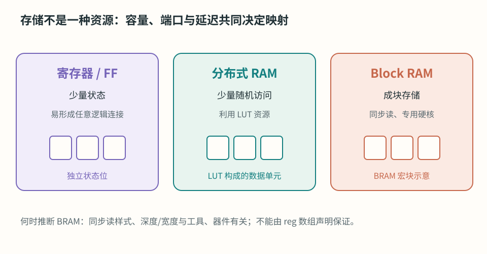
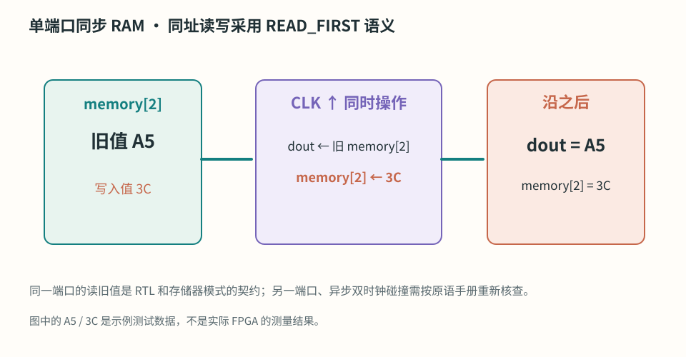
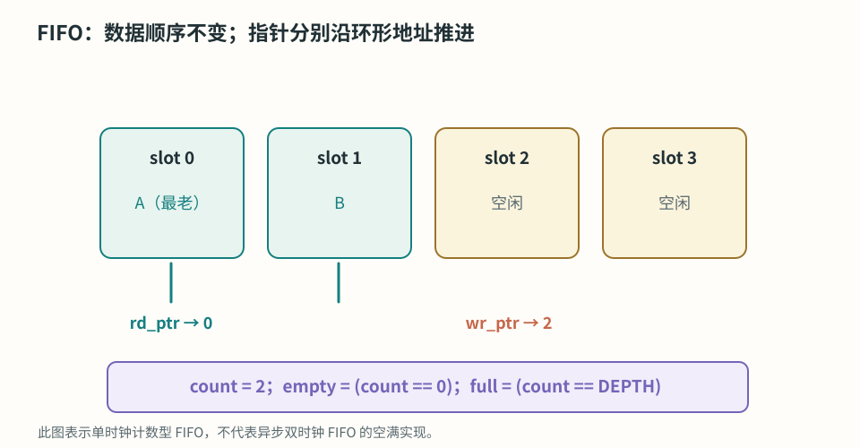

Block RAM 与 FIFO：存储的不只是数据
从同步读的时序与读写冲突开始，严格定义 FIFO 的空满规则、端口边界和跨时钟存储责任。
01 / 1 KB 数据应放在 FF、LUTRAM 还是 BRAM？
一千个字节可以实现为触发器、分布式 RAM，也可以映射到 FPGA 的专用 Block RAM。它们同样能“记住字节”，但端口能力、读延迟、复位样式、资源消耗和功耗不同。

同步 RAM 的地址在有效边沿参与读取、数据在边沿后输出；异步读（组合 assign dout = mem[addr]）在目标器件上未必映射到同一种 BRAM 资源。同步读样式通常更容易推断 BRAM，但映射仍由尺寸、目标 FPGA、综合器选项以及端口、初始化、复位和读写碰撞的 RTL 语义共同决定。
| 资源 | 典型用途 | 关键限制 |
|---|---|---|
| FF 寄存器 | 控制、流水线状态、少量寄存器 | 深度大时布线与 FF 需求很高 |
| LUT 分布式 RAM | 小查找表、浅 FIFO、随机读 | 配置和读端口因系列而异 |
| Block RAM | 缓存、帧片段、队列 | 同步读及碰撞模式须匹配 |
| UltraRAM / 其他宏 | 部分系列的深存储 | 不是每个 FPGA 都有 |
AMD 7 系列和 UltraScale 存储器的物理配置差异很大，不要把“BRAM 是 36 Kb”推广到所有厂商或系列。真实资源利用率必须查看综合报告，不能凭 RTL 代码估算后写成实测数值。
02 / 同址读写：旧数据、新数据还是保持输出？
RAM 的同址读写不能用“总会读到新数据”概括。常见同步模式包括 READ_FIRST（同址写时输出旧数据）、WRITE_FIRST（输出新数据）与 NO_CHANGE（输出保持），具体支持范围以存储宏和端口模式为准。

module ram_sp_read_first #(
parameter integer AW = 4,
parameter integer DW = 8
) (
input wire clk, we,
input wire [AW-1:0] addr,
input wire [DW-1:0] din,
output reg [DW-1:0] dout
);
reg [DW-1:0] mem [0:(1<<AW)-1];
always @(posedge clk) begin
if (we) mem[addr] <= din;
dout <= mem[addr];
end
endmodule测试先写地址 2 为 8'hA5，下一次同址写入 8'h3C。由非阻塞赋值规则，本沿更新后的 dout 应是 A5，随后再读才应是 3C。这是 RTL 模型定义的单端口行为，不能推出双端口、双时钟物理碰撞的结果。
这个模块故意不复位内存阵列：初始未写过的地址是仿真未知值。对所有地址做复位清零可能导致 BRAM 无法按预期推断；如果需要确定的上电内容，应使用目标工具支持的初始化流程并测试。
03 / FIFO 不只是两根指针：空满与交付时刻
同一时钟域内的 FIFO 可以由环形 RAM、写指针、读指针和占用计数器构成。深度为四时，count=0 是空，count=4 是满，中间两个端点由 count 区分，不必推断指针相等的含义。

接口定义 wr_fire = wr_en && !full、rd_fire = rd_en && !empty。本示例的边界契约是：当满时，即使同一拍同时提出读取，写入仍会拒绝；当空时，即使同拍提出写入，读取也会拒绝。 这不是所有 FIFO 的最优规则，但定义明确、容易验证。
wire wr_fire = wr_en && !full;
wire rd_fire = rd_en && !empty;
assign full = (count == DEPTH);
assign empty = (count == 0);
// 同一 clk 沿：
// wr_fire 写 mem[wr_ptr] 并推进 wr_ptr
// rd_fire 把 mem[rd_ptr] 寄存到 rd_data 并推进 rd_ptr
// count 依据 {wr_fire, rd_fire} 增 / 减 / 保持在满状态只允许 pop，下一拍容量才释放；在空状态只允许 push，下一拍才可读到新元素。这两条规则会影响吞吐率，设计接口前必须写入数据手册。若目标 BRAM 有同步读延迟，输出数据有效时刻还需和 rd_valid 对齐。
04 / 为什么异步 FIFO 不能照搬同步 FIFO？
两个独立时钟域无法对同一个 count 做安全的普通同步加减操作。成熟异步 FIFO 通常让写端和读端分别维护自己的二进制/Gray 指针，并把Gray 编码指针经过同步器传到对方域，在各自时钟域内计算 full/empty。
Gray 码相邻值只改一位，但布局布线可能使各 bit 的实际到达偏斜很大。因此需要针对相关跨域路径配置合适的最大延迟或 bus-skew 约束。工具的全局异步 clock-group 例外还可能覆盖更具体的路径约束，必须核查约束优先级。第 13 章会详解这个问题。
异步 FIFO 还需要思考流量平衡：若平均写速率长期高于读速率，任何有限深度 FIFO 最终都会满。这个结论与同步器是否正确无关。深度由突发规模、背压、平均速率差和可接受丢包行为共同决定。
05 / 实验：测出 READ_FIRST 与 FIFO 的边界行为
运行：
iverilog -g2012 -Wall -s tb_ram_sp_read_first -o /tmp/ram.vvp examples/rtl/ram_sp_read_first.v examples/tb/tb_ram_sp_read_first.v
vvp /tmp/ram.vvp
iverilog -g2012 -Wall -s tb_sync_fifo -o /tmp/fifo.vvp examples/rtl/sync_fifo.v examples/tb/tb_sync_fifo.v
vvp /tmp/fifo.vvpRAM 测试只读取已写的地址、验证同址 READ_FIRST；FIFO 测试覆盖满、空、环绕、同时读写、无效请求拒绝和数据先入先出。仿真通过证明的是示例模型的逻辑契约，不证明最终综合成 BRAM，也不证明双时钟物理碰撞安全。
练习：能否把 memory 的每个字节都放在 rst 分支清零，仍保证得到 BRAM？
不能保证。大量存储阵列复位逻辑可能无法匹配目标 BRAM 的初始化/复位语义，导致实现为 FF 或额外逻辑。建议明确区别“需要清除内容”和“只需清除读写有效状态”。